Provenance des montres
┏━━━━━━━━━━━━━━━━━━━━┳━━━━━━━━━━━━━━━━━━━┳━━━━━━━━━┓
┃ Pays ┃ Nombre de montres ┃ % ┃
┡━━━━━━━━━━━━━━━━━━━━╇━━━━━━━━━━━━━━━━━━━╇━━━━━━━━━┩
│ FRANCE │ 10620 │ 33.37 % │
│ ALLEMAGNE │ 4292 │ 13.48 % │
│ ITALIE │ 3470 │ 10.90 % │
│ ÉTATS-UNIS │ 2931 │ 9.21 % │
│ BELGIQUE │ 2096 │ 6.59 % │
│ PAYS-BAS │ 1318 │ 4.14 % │
│ ESPAGNE │ 1083 │ 3.40 % │
│ ROYAUME-UNI │ 1029 │ 3.23 % │
│ JAPON │ 855 │ 2.69 % │
│ POLOGNE │ 518 │ 1.63 % │
│ SUÈDE │ 382 │ 1.20 % │
│ HONG_KONG │ 375 │ 1.18 % │
│ AUTRICHE │ 349 │ 1.10 % │
│ SUISSE │ 288 │ 0.90 % │
│ DANEMARK │ 199 │ 0.63 % │
│ RÉPUBLIQUE_TCHEQUE │ 140 │ 0.44 % │
│ GRÈCE │ 127 │ 0.40 % │
│ LITUANIE │ 110 │ 0.35 % │
│ SINGAPOUR │ 96 │ 0.30 % │
│ ROUMANIE │ 93 │ 0.29 % │
│ PORTUGAL │ 93 │ 0.29 % │
│ INCONNU │ 89 │ 0.28 % │
│ EMIRAT_ARABE_UNIS │ 87 │ 0.27 % │
│ UKRAINE │ 78 │ 0.25 % │
│ MALAISIE │ 71 │ 0.22 % │
│ MONACO │ 70 │ 0.22 % │
│ HONGRIE │ 66 │ 0.21 % │
│ CANADA │ 63 │ 0.20 % │
│ AUSTRALIE │ 55 │ 0.17 % │
│ THAÏLANDE │ 48 │ 0.15 % │
│ TURQUIE │ 46 │ 0.14 % │
│ INDE │ 45 │ 0.14 % │
│ INDONÉSIE │ 43 │ 0.14 % │
│ BRÉSIL │ 41 │ 0.13 % │
│ TAÏWAN │ 37 │ 0.12 % │
│ AFRIQUE_DU_SUD │ 34 │ 0.11 % │
│ BULGARIE │ 32 │ 0.10 % │
│ MEXIQUE │ 31 │ 0.10 % │
│ FINLANDE │ 31 │ 0.10 % │
│ LUXEMBOURG │ 28 │ 0.09 % │
│ SLOVAQUIE │ 27 │ 0.08 % │
│ CORÉE │ 20 │ 0.06 % │
│ SLOVÉNIE │ 19 │ 0.06 % │
│ NOUVELLE-ZÉLANDE │ 18 │ 0.06 % │
│ CHINE │ 18 │ 0.06 % │
│ PHILIPPINES │ 18 │ 0.06 % │
│ LETTONIE │ 18 │ 0.06 % │
│ SERBIE │ 17 │ 0.05 % │
│ ESTONIE │ 17 │ 0.05 % │
│ VIETNAM │ 17 │ 0.05 % │
│ ÉGYPTE │ 16 │ 0.05 % │
│ ALBANIE │ 15 │ 0.05 % │
│ SAINT-MARIN │ 13 │ 0.04 % │
│ ARABIE_SAOUDITE │ 12 │ 0.04 % │
│ MAROC │ 9 │ 0.03 % │
│ CHYPRE │ 9 │ 0.03 % │
│ LIBAN │ 9 │ 0.03 % │
│ ANDORRE │ 8 │ 0.03 % │
│ GÉORGIE │ 6 │ 0.02 % │
│ QATAR │ 6 │ 0.02 % │
│ COLOMBIE │ 5 │ 0.02 % │
│ ISRAËL │ 5 │ 0.02 % │
│ NORVÈGE │ 5 │ 0.02 % │
│ MACAO │ 4 │ 0.01 % │
│ MALTE │ 4 │ 0.01 % │
│ CROATIE │ 4 │ 0.01 % │
│ PANAMA │ 4 │ 0.01 % │
│ LIECHTENSTEIN │ 4 │ 0.01 % │
│ OMAN │ 4 │ 0.01 % │
│ BOSNIE │ 3 │ 0.01 % │
│ IRLANDE │ 3 │ 0.01 % │
│ GIBRALTAR │ 3 │ 0.01 % │
│ ARGENTINE │ 3 │ 0.01 % │
│ BIÉLORUSSIE │ 3 │ 0.01 % │
│ KAZAKHSTAN │ 3 │ 0.01 % │
│ ARMÉNIE │ 2 │ 0.01 % │
│ CHILI │ 2 │ 0.01 % │
│ ÉQUATEUR │ 2 │ 0.01 % │
│ SRI_LANKA │ 2 │ 0.01 % │
│ MOLDAVIE │ 2 │ 0.01 % │
│ ALGÉRIE │ 2 │ 0.01 % │
│ ÎLES │ 2 │ 0.01 % │
│ HONG KONG │ 1 │ 0.00 % │
│ LIBYE │ 1 │ 0.00 % │
│ MACÉDOINE │ 1 │ 0.00 % │
│ SAINT-CHRISTOPHER │ 1 │ 0.00 % │
│ VENEZUELA │ 1 │ 0.00 % │
│ ISLANDE │ 1 │ 0.00 % │
└────────────────────┴───────────────────┴─────────┘1 Contexte général de l’analyse du marché de l’horlogerie
L’industrie horlogère est un secteur dynamique et hautement concurrentiel, où les tendances de prix et les préférences des consommateurs évoluent constamment. Afin de mieux comprendre les comportements les variations de prix, et les caractéristiques des montres proposées sur le marché, cette analyse se concentre sur l’exploration des données collectées à partir de Chrono24, l’une des principales plateformes de vente de montres de luxe en ligne.
2 Objectif de l’analyse
L’objectif principal de cette analyse est de fournir des insights pertinents sur les tendances actuelles du marché des montres en se basant sur des données provenant de Chrono24. À travers le scraping de données en ligne, nous avons extrait des informations détaillées sur un large éventail de montres proposées à la vente, notamment :
Prix des montres : Données sur les prix demandés pour différentes marques, modèles, et états des montres.
Caractéristiques des montres : Informations sur les spécifications telles que les matériaux utilisés (acier, or, etc.), le type de mouvement, la taille, et les autres caractéristiques techniques.
Marques populaires : Identification des marques les plus recherchées et les plus proposées sur le marché.
Évolution des prix : Analyse des variations de prix des montres selon des critères comme la marque, la matière du boîtier, ou la rareté.
3 Méthodologie
Les données ont été collectées par scraping depuis le site web de Chrono24 à l’aide d’outils Python tels que BeautifulSoup et Selenium. Ce processus a permis d’extraire un ensemble de données riche et diversifié sur les montres mises en vente, comprenant des informations sur les prix, les marques, les matériaux, les tailles, et bien plus encore. Ces données ont ensuite été nettoyées et préparées pour l’analyse à l’aide de bibliothèques telles que Pandas et NumPy.
L’analyse s’est articulée autour de plusieurs axes :
Analyse descriptive : Statistiques de base (moyenne, médiane, écart-type) sur les prix des montres et leurs caractéristiques.
Visualisation des données : Utilisation de graphiques pour représenter la distribution des prix par marque, la répartition des matériaux, et d’autres caractéristiques pertinentes.
Modélisation prédictive : Développement de modèles permettant de prédire les variations de prix en fonction de certains facteurs comme la marque, le type de mouvement, et l’état de la montre.
6 Outil technique
- Le projet a entièrement été developpé en Python
7 Résultats
7.1 Répartition des prix par provenances :
Statistiques par pays
┏━━━━━━━━━━━━━━━━━━━━┳━━━━━━━━━━━━━━━━━━━┳━━━━━━━━━━━━┳━━━━━━━━━━━┳━━━━━━━━━━━┓
┃ Pays ┃ Nombre de montres ┃ Prix moyen ┃ Prix min ┃ Prix max ┃
┡━━━━━━━━━━━━━━━━━━━━╇━━━━━━━━━━━━━━━━━━━╇━━━━━━━━━━━━╇━━━━━━━━━━━╇━━━━━━━━━━━┩
│ SAINT-CHRISTOPHER │ 1 │ 200000.00 │ 200000.00 │ 200000.00 │
│ MONACO │ 70 │ 46088.42 │ 1655.00 │ 302100.00 │
│ NORVÈGE │ 5 │ 31432.40 │ 2615.00 │ 74048.00 │
│ EMIRAT_ARABE_UNIS │ 87 │ 30750.04 │ 1552.00 │ 453273.00 │
│ AUTRICHE │ 349 │ 29773.07 │ 169.00 │ 779500.00 │
│ LIBYE │ 1 │ 25000.00 │ 25000.00 │ 25000.00 │
│ LIECHTENSTEIN │ 4 │ 24944.25 │ 17786.00 │ 33435.00 │
│ MALAISIE │ 71 │ 21534.98 │ 1100.00 │ 202217.00 │
│ CORÉE │ 20 │ 21156.37 │ 1734.00 │ 60931.00 │
│ RÉPUBLIQUE_TCHEQUE │ 140 │ 20033.01 │ 399.00 │ 330000.00 │
│ CHINE │ 18 │ 17328.53 │ 1281.00 │ 82813.00 │
│ HONG_KONG │ 375 │ 16353.63 │ 344.00 │ 287911.00 │
│ ÉTATS-UNIS │ 2931 │ 15128.74 │ 1012.00 │ 339488.00 │
│ ROYAUME-UNI │ 1029 │ 14853.07 │ 1080.00 │ 292603.00 │
│ ARABIE_SAOUDITE │ 12 │ 13907.56 │ 2032.00 │ 79770.00 │
│ ARMÉNIE │ 2 │ 12763.00 │ 6721.00 │ 18805.00 │
│ GIBRALTAR │ 3 │ 12755.00 │ 2820.00 │ 24168.00 │
│ SUISSE │ 288 │ 12199.42 │ 362.00 │ 94539.00 │
│ DANEMARK │ 199 │ 12023.65 │ 900.00 │ 91415.00 │
│ MALTE │ 4 │ 11837.50 │ 6000.00 │ 20600.00 │
│ SUÈDE │ 382 │ 10821.71 │ 850.00 │ 116003.00 │
│ ALLEMAGNE │ 4292 │ 10616.46 │ 110.00 │ 690000.00 │
│ ROUMANIE │ 93 │ 10546.97 │ 295.00 │ 175000.00 │
│ ESPAGNE │ 1083 │ 10443.99 │ 90.00 │ 440000.00 │
│ ITALIE │ 3470 │ 10433.91 │ 130.00 │ 470000.00 │
│ SLOVAQUIE │ 27 │ 10276.81 │ 290.00 │ 99900.00 │
│ JAPON │ 855 │ 10239.75 │ 1008.00 │ 521782.00 │
│ FRANCE │ 10620 │ 10146.47 │ 49.00 │ 689000.00 │
│ POLOGNE │ 518 │ 10124.33 │ 290.00 │ 245000.00 │
│ CANADA │ 63 │ 9476.18 │ 1158.00 │ 43856.00 │
│ BELGIQUE │ 2096 │ 8975.80 │ 100.00 │ 299000.00 │
│ QATAR │ 6 │ 8775.00 │ 1323.00 │ 19766.00 │
│ PORTUGAL │ 93 │ 8644.44 │ 240.00 │ 39999.00 │
│ PAYS-BAS │ 1318 │ 8624.19 │ 120.00 │ 119995.00 │
│ ESTONIE │ 17 │ 8476.00 │ 2250.00 │ 32000.00 │
│ TURQUIE │ 46 │ 8466.59 │ 635.00 │ 22730.00 │
│ AUSTRALIE │ 55 │ 8455.12 │ 1052.00 │ 48346.00 │
│ CHYPRE │ 9 │ 7802.78 │ 420.00 │ 26118.00 │
│ LITUANIE │ 110 │ 7742.33 │ 330.00 │ 99999.00 │
│ FINLANDE │ 31 │ 7545.00 │ 90.00 │ 89500.00 │
│ IRLANDE │ 3 │ 7316.67 │ 380.00 │ 16975.00 │
│ GRÈCE │ 127 │ 7286.08 │ 278.00 │ 40000.00 │
│ CROATIE │ 4 │ 6701.75 │ 108.00 │ 24000.00 │
│ TAÏWAN │ 37 │ 6599.21 │ 1010.00 │ 46156.00 │
│ THAÏLANDE │ 48 │ 6379.93 │ 1127.00 │ 44893.00 │
│ BIÉLORUSSIE │ 3 │ 6311.33 │ 4625.00 │ 9669.00 │
│ LUXEMBOURG │ 28 │ 6259.86 │ 390.00 │ 20000.00 │
│ SINGAPOUR │ 96 │ 6136.43 │ 1096.00 │ 48913.00 │
│ INDONÉSIE │ 43 │ 5918.77 │ 150.00 │ 37969.00 │
│ MACAO │ 4 │ 5732.75 │ 2588.00 │ 15132.00 │
│ LIBAN │ 9 │ 5635.00 │ 600.00 │ 18769.00 │
│ UKRAINE │ 78 │ 5541.94 │ 65.00 │ 23880.00 │
│ SAINT-MARIN │ 13 │ 5537.92 │ 3300.00 │ 9839.00 │
│ VENEZUELA │ 1 │ 5162.00 │ 5162.00 │ 5162.00 │
│ BRÉSIL │ 41 │ 5141.23 │ 600.00 │ 18138.00 │
│ ANDORRE │ 8 │ 5049.75 │ 637.00 │ 7923.00 │
│ AFRIQUE_DU_SUD │ 34 │ 4920.26 │ 1354.00 │ 14560.00 │
│ HONGRIE │ 66 │ 4919.46 │ 175.00 │ 21450.00 │
│ BULGARIE │ 32 │ 4427.29 │ 450.00 │ 26900.00 │
│ MEXIQUE │ 31 │ 4310.61 │ 1620.00 │ 9449.00 │
│ INCONNU │ 89 │ 4279.00 │ 3748.00 │ 4810.00 │
│ INDE │ 45 │ 4121.13 │ 1039.00 │ 14025.00 │
│ SERBIE │ 17 │ 4073.59 │ 150.00 │ 18718.00 │
│ ISRAËL │ 5 │ 4066.50 │ 3382.00 │ 4751.00 │
│ LETTONIE │ 18 │ 3940.39 │ 349.00 │ 13400.00 │
│ SLOVÉNIE │ 19 │ 3856.21 │ 106.00 │ 22900.00 │
│ PHILIPPINES │ 18 │ 3701.67 │ 1501.00 │ 6913.00 │
│ COLOMBIE │ 5 │ 3500.40 │ 1551.00 │ 7271.00 │
│ ÎLES │ 2 │ 3201.00 │ 3190.00 │ 3212.00 │
│ CHILI │ 2 │ 3173.00 │ 3173.00 │ 3173.00 │
│ NOUVELLE-ZÉLANDE │ 18 │ 2898.70 │ 1310.00 │ 6005.00 │
│ ÉGYPTE │ 16 │ 2781.33 │ 1657.00 │ 4451.00 │
│ KAZAKHSTAN │ 3 │ 2745.50 │ 2745.00 │ 2746.00 │
│ VIETNAM │ 17 │ 2741.50 │ 1369.00 │ 3029.00 │
│ MOLDAVIE │ 2 │ 2547.50 │ 2541.00 │ 2554.00 │
│ GÉORGIE │ 6 │ 2528.60 │ 1126.00 │ 5926.00 │
│ ÉQUATEUR │ 2 │ 2308.50 │ 1231.00 │ 3386.00 │
│ PANAMA │ 4 │ 2098.00 │ 2098.00 │ 2098.00 │
│ ALBANIE │ 15 │ 1785.46 │ 140.00 │ 15796.00 │
│ OMAN │ 4 │ 1629.33 │ 1056.00 │ 2767.00 │
│ HONG KONG │ 1 │ 1407.00 │ 1407.00 │ 1407.00 │
│ ARGENTINE │ 3 │ 1396.00 │ 1396.00 │ 1396.00 │
│ SRI_LANKA │ 2 │ 1366.00 │ 1360.00 │ 1372.00 │
│ MAROC │ 9 │ 1013.00 │ 105.00 │ 2509.00 │
│ ALGÉRIE │ 2 │ 665.00 │ 410.00 │ 920.00 │
│ MACÉDOINE │ 1 │ 340.00 │ 340.00 │ 340.00 │
│ BOSNIE │ 3 │ nan │ nan │ nan │
│ ISLANDE │ 1 │ nan │ nan │ nan │
└────────────────────┴───────────────────┴────────────┴───────────┴───────────┘7.2 Répartition des prix selon le type de mouvement :
Statistiques par Mouvement
┏━━━━━━━━━━━━━┳━━━━━━━━━━━━┳━━━━━━━━━━┳━━━━━━━━━━┓
┃ Mouvement ┃ Prix moyen ┃ Prix min ┃ Prix max ┃
┡━━━━━━━━━━━━━╇━━━━━━━━━━━━╇━━━━━━━━━━╇━━━━━━━━━━┩
│ AUTOMATIQUE │ 11538.25 │ 59.00 │ 59.00 │
│ MANUEL │ 7313.69 │ 90.00 │ 90.00 │
│ QUARTZ │ 2945.07 │ 49.00 │ 49.00 │
│ BATTERIE │ 2630.00 │ 1000.00 │ 1000.00 │
│ SOLAIRE │ 1171.75 │ 700.00 │ 700.00 │
└─────────────┴────────────┴──────────┴──────────┘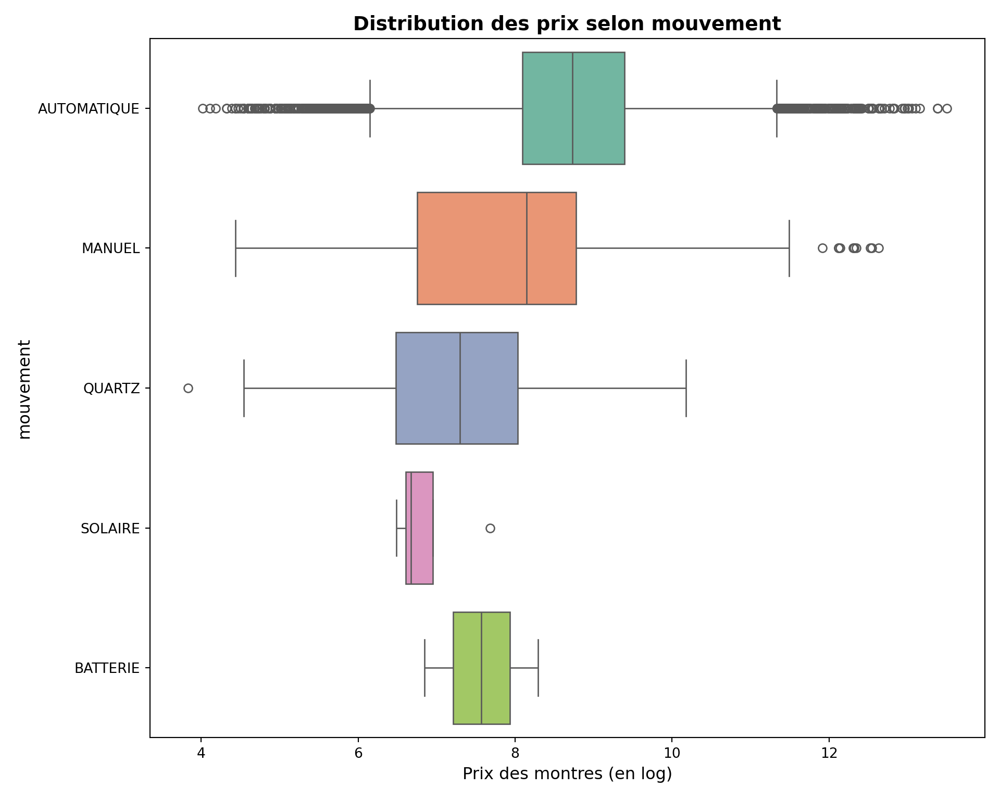
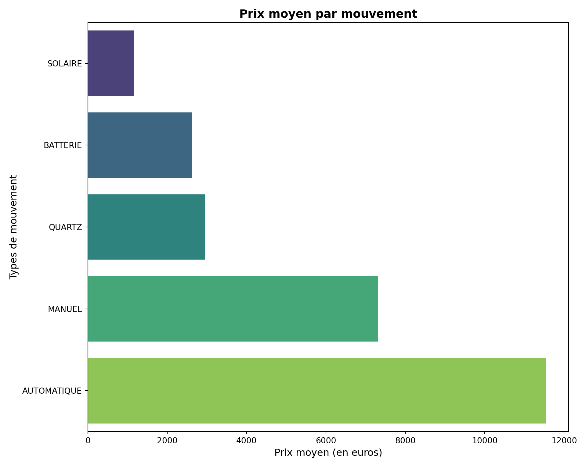
7.3 Répartition des prix selon le sexe :
Statistiques par Sexe
┏━━━━━━━┳━━━━━━━━━━━━┳━━━━━━━━━━┳━━━━━━━━━━┓
┃ Sexe ┃ Prix moyen ┃ Prix min ┃ Prix max ┃
┡━━━━━━━╇━━━━━━━━━━━━╇━━━━━━━━━━╇━━━━━━━━━━┩
│ HOMME │ 11909.98 │ 49.00 │ 49.00 │
│ FEMME │ 10018.34 │ 90.00 │ 90.00 │
└───────┴────────────┴──────────┴──────────┘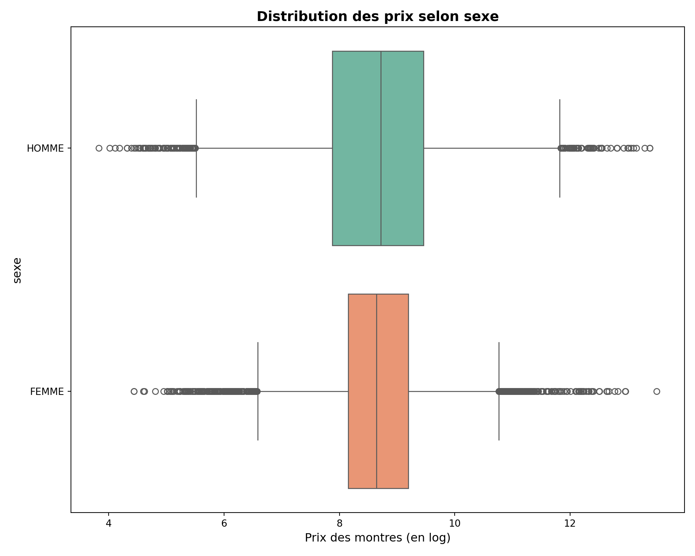
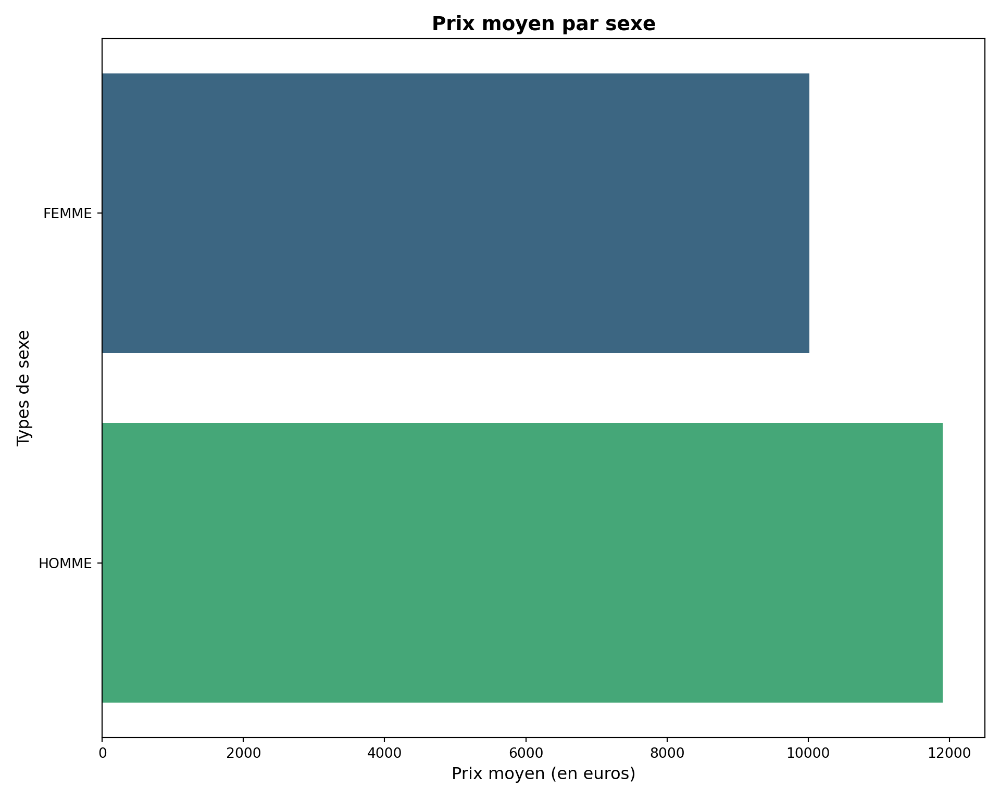
7.4 Répartition des prix selon la marque :
Statistiques par Marque
┏━━━━━━━━━━━━━━━━━━━━━━━┳━━━━━━━━━━━━┳━━━━━━━━━━┳━━━━━━━━━━┓
┃ Marque ┃ Prix moyen ┃ Prix min ┃ Prix max ┃
┡━━━━━━━━━━━━━━━━━━━━━━━╇━━━━━━━━━━━━╇━━━━━━━━━━╇━━━━━━━━━━┩
│ RICHARD-MILLE │ 235473.26 │ 99900.00 │ 99900.00 │
│ FPJOURNE │ 109509.29 │ 51029.00 │ 51029.00 │
│ DE-BETHUNE │ 69900.00 │ 69900.00 │ 69900.00 │
│ PATEK-PHILIPPE │ 54576.68 │ 2999.00 │ 2999.00 │
│ URWERK │ 46072.00 │ 46072.00 │ 46072.00 │
│ AUDEMARS-PIGUET │ 45427.53 │ 2000.00 │ 2000.00 │
│ A-LANGE-&-SÖHNE │ 40202.17 │ 13300.00 │ 13300.00 │
│ HARRY-WINSTON │ 39272.50 │ 16946.00 │ 16946.00 │
│ VAN-CLEEF-&-ARPELS │ 29800.00 │ 7500.00 │ 7500.00 │
│ MORITZ-GROSSMANN │ 29701.00 │ 29701.00 │ 29701.00 │
│ BOVET │ 26825.00 │ 25400.00 │ 25400.00 │
│ VACHERON-CONSTANTIN │ 23177.34 │ 2900.00 │ 2900.00 │
│ BREGUET │ 22043.16 │ 4250.00 │ 4250.00 │
│ HMOSER-&-CIE │ 20142.55 │ 11489.00 │ 11489.00 │
│ ULYSSE-NARDIN │ 18180.34 │ 3331.00 │ 3331.00 │
│ PARMIGIANI-FLEURIER │ 17942.04 │ 5696.00 │ 5696.00 │
│ ROGER-DUBUIS │ 17034.73 │ 5918.00 │ 5918.00 │
│ JAQUET-DROZ │ 14496.92 │ 4145.00 │ 4145.00 │
│ ROLEX │ 12966.58 │ 250.00 │ 250.00 │
│ HUBLOT │ 12719.31 │ 1400.00 │ 1400.00 │
│ PIAGET │ 12358.62 │ 1500.00 │ 1500.00 │
│ FRANCK-MULLER │ 11683.68 │ 1527.00 │ 1527.00 │
│ BLANCPAIN │ 11144.49 │ 1450.00 │ 1450.00 │
│ GIRARD-PERREGAUX │ 11111.31 │ 1100.00 │ 1100.00 │
│ CHOPARD │ 11096.54 │ 349.00 │ 349.00 │
│ DE-GRISOGONO │ 10199.17 │ 6500.00 │ 6500.00 │
│ CORUM │ 10132.53 │ 1370.00 │ 1370.00 │
│ LOUIS-MOINET │ 10000.00 │ 10000.00 │ 10000.00 │
│ DIOR │ 8400.33 │ 1200.00 │ 1200.00 │
│ JACOB-&-CO │ 8155.60 │ 3990.00 │ 3990.00 │
│ BULGARI │ 8011.38 │ 809.00 │ 809.00 │
│ JAEGER-LECOULTRE │ 7774.12 │ 550.00 │ 550.00 │
│ GLASHÜTTE-ORIGINAL │ 7693.98 │ 2600.00 │ 2600.00 │
│ CARTIER │ 7454.14 │ 495.00 │ 495.00 │
│ GÉRALD-GENTA │ 7220.00 │ 6900.00 │ 6900.00 │
│ IWC │ 6733.35 │ 700.00 │ 700.00 │
│ PANERAI │ 6525.73 │ 3446.00 │ 3446.00 │
│ CHANEL │ 6432.64 │ 1907.00 │ 1907.00 │
│ PEQUIGNET │ 6415.83 │ 700.00 │ 700.00 │
│ GRAND-SEIKO │ 6320.40 │ 1308.00 │ 1308.00 │
│ BOUCHERON │ 6190.00 │ 1990.00 │ 1990.00 │
│ ZENITH │ 5578.32 │ 90.00 │ 90.00 │
│ TIFFANY │ 5448.00 │ 5448.00 │ 5448.00 │
│ JORG-HYSEK │ 5296.86 │ 2098.00 │ 2098.00 │
│ CHAUMET │ 5203.89 │ 895.00 │ 895.00 │
│ UNIVERSAL-GENÈVE │ 5139.97 │ 1200.00 │ 1200.00 │
│ GRAHAM │ 4991.00 │ 2599.00 │ 2599.00 │
│ OMEGA │ 4955.03 │ 90.00 │ 90.00 │
│ BEDAT-&-CO │ 4780.00 │ 3567.00 │ 3567.00 │
│ PERRELET │ 4423.00 │ 1800.00 │ 1800.00 │
│ BREITLING │ 4394.35 │ 400.00 │ 400.00 │
│ CARL-F-BUCHERER │ 4338.63 │ 1200.00 │ 1200.00 │
│ BRM │ 4099.67 │ 3200.00 │ 3200.00 │
│ TUDOR │ 3666.51 │ 450.00 │ 450.00 │
│ VULCAIN │ 3309.95 │ 1290.00 │ 1290.00 │
│ BELL-&-ROSS │ 3276.18 │ 1250.00 │ 1250.00 │
│ PORSCHE-DESIGN │ 3125.36 │ 1250.00 │ 1250.00 │
│ TAG-HEUER │ 3092.63 │ 170.00 │ 170.00 │
│ EBEL │ 2986.40 │ 490.00 │ 490.00 │
│ EBERHARD-&-CO │ 2733.11 │ 1149.00 │ 1149.00 │
│ JEANRICHARD │ 2666.00 │ 900.00 │ 900.00 │
│ HERMÈS │ 2534.53 │ 650.00 │ 650.00 │
│ CHRONOSWISS │ 2512.07 │ 1100.00 │ 1100.00 │
│ BREMONT │ 2500.00 │ 2500.00 │ 2500.00 │
│ CUERVO-Y-SOBRINOS │ 2418.40 │ 1300.00 │ 1300.00 │
│ TUTIMA │ 2362.83 │ 1499.00 │ 1499.00 │
│ BALL │ 2304.50 │ 1201.00 │ 1201.00 │
│ FREDERIQUE-CONSTANT │ 2277.71 │ 530.00 │ 530.00 │
│ MONTBLANC │ 2171.86 │ 450.00 │ 450.00 │
│ ENICAR │ 2169.78 │ 108.00 │ 108.00 │
│ MAURICE-LACROIX │ 2145.88 │ 299.00 │ 299.00 │
│ HANHART │ 2061.25 │ 990.00 │ 990.00 │
│ UNION-GLASHÜTTE │ 2059.23 │ 1200.00 │ 1200.00 │
│ CONCORD │ 1999.00 │ 1048.00 │ 1048.00 │
│ LONGINES │ 1983.46 │ 200.00 │ 200.00 │
│ BAUME-&-MERCIER │ 1949.63 │ 390.00 │ 390.00 │
│ SINN │ 1864.46 │ 820.00 │ 820.00 │
│ MÜHLE-GLASHÜTTE │ 1834.67 │ 850.00 │ 850.00 │
│ NOMOS │ 1832.80 │ 895.00 │ 895.00 │
│ U-BOAT │ 1769.50 │ 675.00 │ 675.00 │
│ DOXA │ 1752.06 │ 720.00 │ 720.00 │
│ MEISTERSINGER │ 1745.00 │ 400.00 │ 400.00 │
│ ORIS │ 1726.74 │ 350.00 │ 350.00 │
│ MOVADO │ 1680.00 │ 360.00 │ 360.00 │
│ PAUL-PICOT │ 1641.43 │ 890.00 │ 890.00 │
│ FORTIS │ 1633.89 │ 850.00 │ 850.00 │
│ LOUIS-ERARD │ 1631.75 │ 637.00 │ 637.00 │
│ RADO │ 1630.21 │ 370.00 │ 370.00 │
│ MARCELLO-C │ 1611.00 │ 1611.00 │ 1611.00 │
│ ZODIAC │ 1417.12 │ 370.00 │ 370.00 │
│ EPOS │ 1390.00 │ 1390.00 │ 1390.00 │
│ ETERNA │ 1322.20 │ 175.00 │ 175.00 │
│ JUNGHANS │ 1191.87 │ 430.00 │ 430.00 │
│ ZENO-WATCH-BASEL │ 1181.20 │ 350.00 │ 350.00 │
│ RAYMOND-WEIL │ 1167.62 │ 169.00 │ 169.00 │
│ CHARRIOL │ 1125.00 │ 1125.00 │ 1125.00 │
│ ALPINA │ 1029.12 │ 220.00 │ 220.00 │
│ MIDO │ 993.91 │ 367.00 │ 367.00 │
│ CERTINA │ 918.90 │ 150.00 │ 150.00 │
│ CASIO │ 901.78 │ 49.00 │ 49.00 │
│ AEROWATCH │ 900.00 │ 900.00 │ 900.00 │
│ APPLE │ 897.50 │ 290.00 │ 290.00 │
│ LOCMAN │ 895.00 │ 790.00 │ 790.00 │
│ HAMILTON │ 855.64 │ 270.00 │ 270.00 │
│ EDOX │ 838.14 │ 389.00 │ 389.00 │
│ MICHEL-HERBELIN │ 832.41 │ 220.00 │ 220.00 │
│ TONINO-LAMBORGHINI │ 823.33 │ 690.00 │ 690.00 │
│ SEIKO │ 806.82 │ 80.00 │ 80.00 │
│ GUCCI │ 761.00 │ 300.00 │ 300.00 │
│ VICTORINOX-SWISS-ARMY │ 734.46 │ 230.00 │ 230.00 │
│ DAVOSA │ 722.50 │ 460.00 │ 460.00 │
│ ANONIMO │ 700.00 │ 700.00 │ 700.00 │
│ TISSOT │ 585.40 │ 70.00 │ 70.00 │
│ GLYCINE │ 572.12 │ 260.00 │ 260.00 │
│ SEVENFRIDAY │ 566.00 │ 499.00 │ 499.00 │
│ BULOVA │ 536.00 │ 150.00 │ 150.00 │
│ LIP │ 464.80 │ 160.00 │ 160.00 │
│ SWATCH │ 453.84 │ 209.00 │ 209.00 │
│ STEINHART │ 444.00 │ 270.00 │ 270.00 │
│ CITIZEN │ 423.30 │ 100.00 │ 100.00 │
│ REVUE-THOMMEN │ 416.67 │ 400.00 │ 400.00 │
│ MONDAINE │ 400.00 │ 250.00 │ 250.00 │
│ GRUEN │ 399.67 │ 299.00 │ 299.00 │
│ ROAMER │ 360.50 │ 106.00 │ 106.00 │
│ LACO │ 357.25 │ 260.00 │ 260.00 │
│ ORIENT │ 350.17 │ 65.00 │ 65.00 │
│ WELDER │ 349.00 │ 349.00 │ 349.00 │
│ JUNKERS │ 290.00 │ 290.00 │ 290.00 │
│ WYLER │ nan │ nan │ nan │
└───────────────────────┴────────────┴──────────┴──────────┘7.5 Répartition des prix selon la matière du boitier :
Statistiques par Matiere_boitier
┏━━━━━━━━━━━━━━━━━┳━━━━━━━━━━━━┳━━━━━━━━━━┳━━━━━━━━━━┓
┃ Matiere_boitier ┃ Prix moyen ┃ Prix min ┃ Prix max ┃
┡━━━━━━━━━━━━━━━━━╇━━━━━━━━━━━━╇━━━━━━━━━━╇━━━━━━━━━━┩
│ PLATINE │ 75938.82 │ 1516.00 │ 1516.00 │
│ OR_ROSE │ 41777.57 │ 290.00 │ 290.00 │
│ OR_BLANC │ 28163.81 │ 750.00 │ 750.00 │
│ CARBONE │ 25398.11 │ 250.00 │ 250.00 │
│ OR_ROUGE │ 19542.16 │ 3799.00 │ 3799.00 │
│ OR_JAUNE │ 15789.21 │ 160.00 │ 160.00 │
│ TANTALE │ 14655.00 │ 7000.00 │ 7000.00 │
│ PALLADIUM │ 11900.00 │ 11900.00 │ 11900.00 │
│ OR_ACIER │ 9303.73 │ 90.00 │ 90.00 │
│ TITANE │ 9272.68 │ 234.00 │ 234.00 │
│ ACIER │ 8316.00 │ 65.00 │ 65.00 │
│ CÉRAMIQUE │ 7463.14 │ 209.00 │ 209.00 │
│ BRONZE │ 4050.21 │ 700.00 │ 700.00 │
│ ALUMINIUM │ 3318.33 │ 290.00 │ 290.00 │
│ ARGENT │ 2263.75 │ 135.00 │ 135.00 │
│ PLAQUÉE_OR │ 1723.49 │ 359.00 │ 359.00 │
│ VERRE_SAPHIR │ 1237.00 │ 1237.00 │ 1237.00 │
│ PLASTIQUE │ 807.16 │ 80.00 │ 80.00 │
└─────────────────┴────────────┴──────────┴──────────┘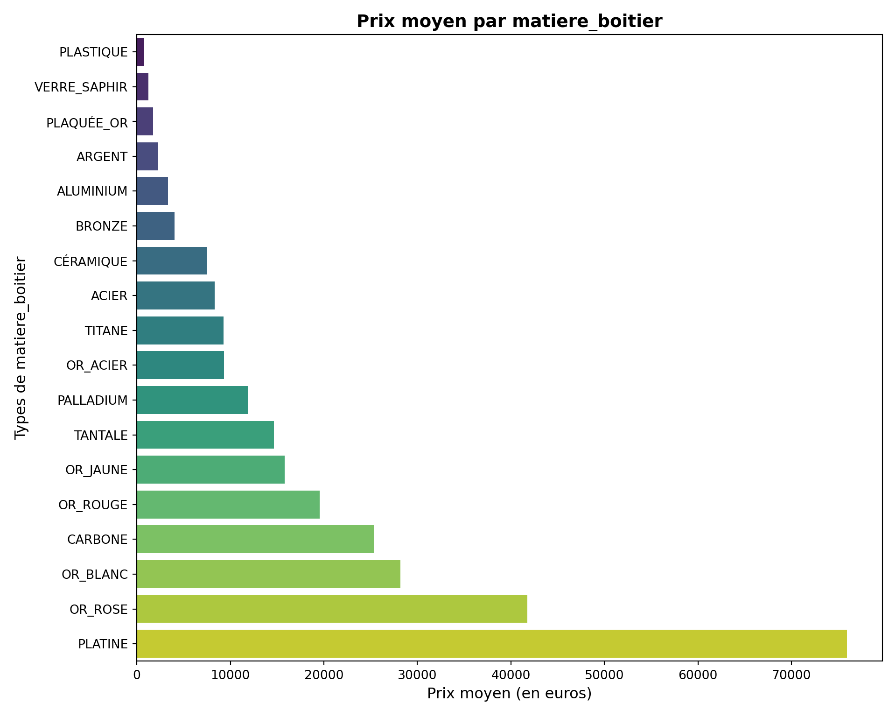
7.6 Répartition des prix selon la matière du bracelet :
Statistiques par Matiere_bracelet
┏━━━━━━━━━━━━━━━━━━┳━━━━━━━━━━━━┳━━━━━━━━━━┳━━━━━━━━━━┓
┃ Matiere_bracelet ┃ Prix moyen ┃ Prix min ┃ Prix max ┃
┡━━━━━━━━━━━━━━━━━━╇━━━━━━━━━━━━╇━━━━━━━━━━╇━━━━━━━━━━┩
│ PLATINE │ 83331.30 │ 4080.00 │ 4080.00 │
│ OR_ROSE │ 66541.32 │ 630.00 │ 630.00 │
│ OR │ 31789.55 │ 790.00 │ 790.00 │
│ OR_BLANC │ 20807.53 │ 250.00 │ 250.00 │
│ SATIN │ 20088.26 │ 750.00 │ 750.00 │
│ CAOUTCHOUC │ 19179.74 │ 80.00 │ 80.00 │
│ OR_JAUNE │ 16053.32 │ 1195.00 │ 1195.00 │
│ OR_ACIER │ 9535.66 │ 169.00 │ 169.00 │
│ ACIER │ 9431.21 │ 65.00 │ 65.00 │
│ CÉRAMIQUE │ 8576.80 │ 490.00 │ 490.00 │
│ TITANE │ 7386.65 │ 234.00 │ 234.00 │
│ OR_ROUGE │ 6966.00 │ 4000.00 │ 4000.00 │
│ CUIR │ 6630.74 │ 90.00 │ 90.00 │
│ PLASTIQUE │ 5868.15 │ 120.00 │ 120.00 │
│ CUIRE_DE_VACHE │ 5791.45 │ 200.00 │ 200.00 │
│ ARGENT │ 5266.61 │ 240.00 │ 240.00 │
│ ALUMINIUM │ 4950.00 │ 4950.00 │ 4950.00 │
│ TEXTILE │ 4178.00 │ 118.00 │ 118.00 │
│ CUIR_AUTRUCHE │ 4091.45 │ 275.00 │ 275.00 │
│ SILICONE │ 3360.60 │ 250.00 │ 250.00 │
│ BRONZE │ 1843.00 │ 1300.00 │ 1300.00 │
│ REQUIN │ 395.00 │ 395.00 │ 395.00 │
└──────────────────┴────────────┴──────────┴──────────┘
7.7 Répartition des prix selon l’état de la montre :
Statistiques par Matiere_bracelet
┏━━━━━━━━━━━━━━━━━━┳━━━━━━━━━━━━┳━━━━━━━━━━┳━━━━━━━━━━┓
┃ Matiere_bracelet ┃ Prix moyen ┃ Prix min ┃ Prix max ┃
┡━━━━━━━━━━━━━━━━━━╇━━━━━━━━━━━━╇━━━━━━━━━━╇━━━━━━━━━━┩
│ PLATINE │ 83331.30 │ 4080.00 │ 4080.00 │
│ OR_ROSE │ 66541.32 │ 630.00 │ 630.00 │
│ OR │ 31789.55 │ 790.00 │ 790.00 │
│ OR_BLANC │ 20807.53 │ 250.00 │ 250.00 │
│ SATIN │ 20088.26 │ 750.00 │ 750.00 │
│ CAOUTCHOUC │ 19179.74 │ 80.00 │ 80.00 │
│ OR_JAUNE │ 16053.32 │ 1195.00 │ 1195.00 │
│ OR_ACIER │ 9535.66 │ 169.00 │ 169.00 │
│ ACIER │ 9431.21 │ 65.00 │ 65.00 │
│ CÉRAMIQUE │ 8576.80 │ 490.00 │ 490.00 │
│ TITANE │ 7386.65 │ 234.00 │ 234.00 │
│ OR_ROUGE │ 6966.00 │ 4000.00 │ 4000.00 │
│ CUIR │ 6630.74 │ 90.00 │ 90.00 │
│ PLASTIQUE │ 5868.15 │ 120.00 │ 120.00 │
│ CUIRE_DE_VACHE │ 5791.45 │ 200.00 │ 200.00 │
│ ARGENT │ 5266.61 │ 240.00 │ 240.00 │
│ ALUMINIUM │ 4950.00 │ 4950.00 │ 4950.00 │
│ TEXTILE │ 4178.00 │ 118.00 │ 118.00 │
│ CUIR_AUTRUCHE │ 4091.45 │ 275.00 │ 275.00 │
│ SILICONE │ 3360.60 │ 250.00 │ 250.00 │
│ BRONZE │ 1843.00 │ 1300.00 │ 1300.00 │
│ REQUIN │ 395.00 │ 395.00 │ 395.00 │
└──────────────────┴────────────┴──────────┴──────────┘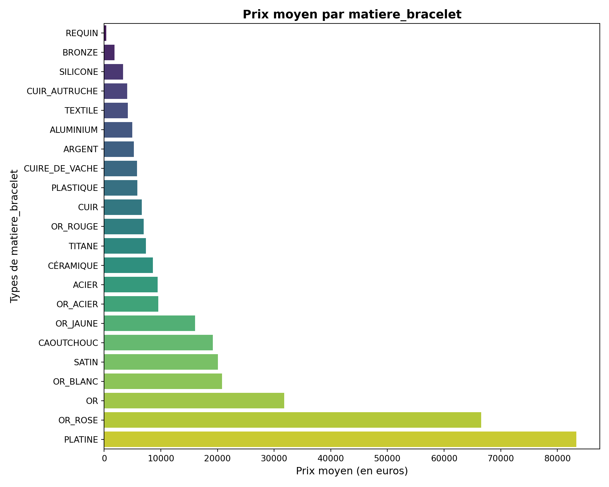
7.8 Répartition des prix selon la matière de la lunette :
Statistiques par Matiere_lunette
┏━━━━━━━━━━━━━━━━━┳━━━━━━━━━━━━┳━━━━━━━━━━┳━━━━━━━━━━┓
┃ Matiere_lunette ┃ Prix moyen ┃ Prix min ┃ Prix max ┃
┡━━━━━━━━━━━━━━━━━╇━━━━━━━━━━━━╇━━━━━━━━━━╇━━━━━━━━━━┩
│ CARBONE │ 72411.20 │ 90.00 │ 90.00 │
│ OR_ROSE │ 27236.14 │ 590.00 │ 590.00 │
│ PLATINE │ 25010.12 │ 1300.00 │ 1300.00 │
│ OR │ 16523.01 │ 160.00 │ 160.00 │
│ CÉRAMIQUE │ 14323.58 │ 209.00 │ 209.00 │
│ OR_BLANC │ 12188.44 │ 500.00 │ 500.00 │
│ TITANE │ 10200.50 │ 234.00 │ 234.00 │
│ LISSE │ 9034.26 │ 5499.00 │ 5499.00 │
│ OR_JAUNE │ 8863.47 │ 250.00 │ 250.00 │
│ ACIER │ 8117.39 │ 65.00 │ 65.00 │
│ OR_ROUGE │ 6292.94 │ 2750.00 │ 2750.00 │
│ ALUMINIUM │ 4280.71 │ 270.00 │ 270.00 │
│ ARGENT │ 3408.35 │ 290.00 │ 290.00 │
│ OR_ACIER │ 3328.99 │ 169.00 │ 169.00 │
│ BRONZE │ 3305.61 │ 800.00 │ 800.00 │
│ PLASTIQUE │ 1608.46 │ 80.00 │ 80.00 │
│ TUNGSTÈNE │ 1591.50 │ 370.00 │ 370.00 │
│ PALLADIUM │ 550.00 │ 550.00 │ 550.00 │
└─────────────────┴────────────┴──────────┴──────────┘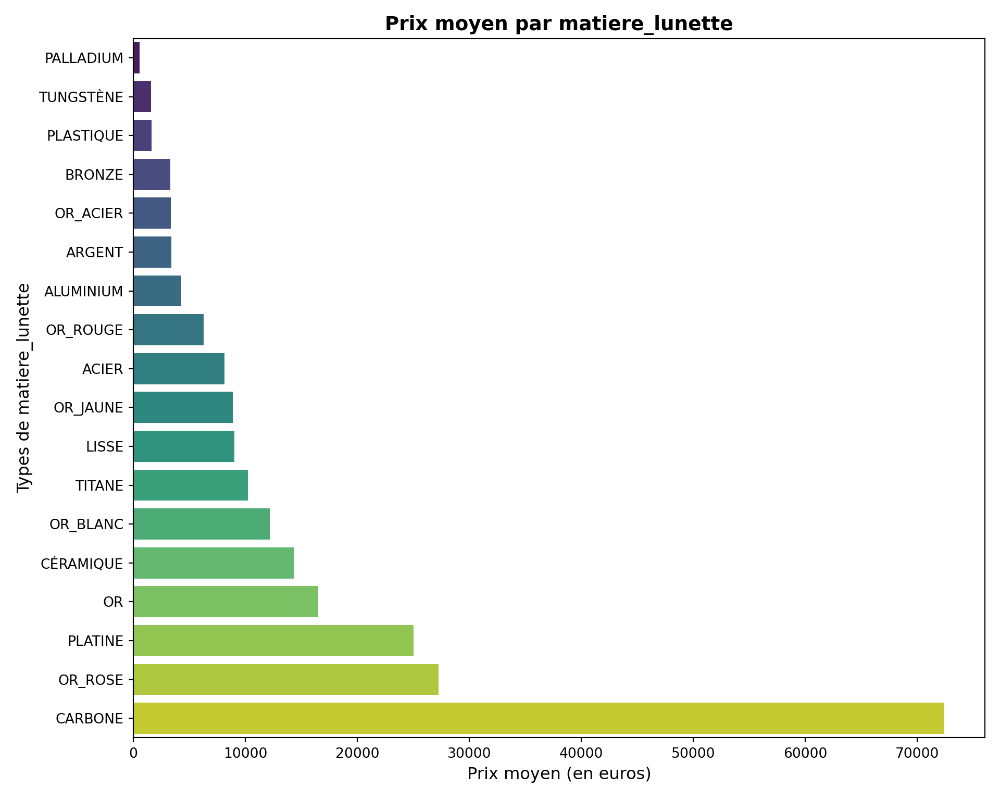
7.9 Répartition des prix selon la matière de la boucle :
Statistiques par Matiere_boucle
┏━━━━━━━━━━━━━━━━┳━━━━━━━━━━━━┳━━━━━━━━━━┳━━━━━━━━━━┓
┃ Matiere_boucle ┃ Prix moyen ┃ Prix min ┃ Prix max ┃
┡━━━━━━━━━━━━━━━━╇━━━━━━━━━━━━╇━━━━━━━━━━╇━━━━━━━━━━┩
│ CARBONE │ 64556.00 │ 90.00 │ 90.00 │
│ PLATINE │ 26700.74 │ 1516.00 │ 1516.00 │
│ OR │ 14771.20 │ 160.00 │ 160.00 │
│ CÉRAMIQUE │ 14668.30 │ 209.00 │ 209.00 │
│ TITANE │ 10275.92 │ 234.00 │ 234.00 │
│ ACIER │ 7791.52 │ 65.00 │ 65.00 │
│ OR_ACIER │ 6557.89 │ 90.00 │ 90.00 │
│ ALUMINIUM │ 4603.69 │ 270.00 │ 270.00 │
│ BRONZE │ 3525.84 │ 1190.00 │ 1190.00 │
│ ARGENT │ 2349.47 │ 106.00 │ 106.00 │
│ PLASTIQUE │ 1599.93 │ 80.00 │ 80.00 │
│ TUNGSTÈNE │ 1299.75 │ 370.00 │ 370.00 │
│ PALLADIUM │ 550.00 │ 550.00 │ 550.00 │
└────────────────┴────────────┴──────────┴──────────┘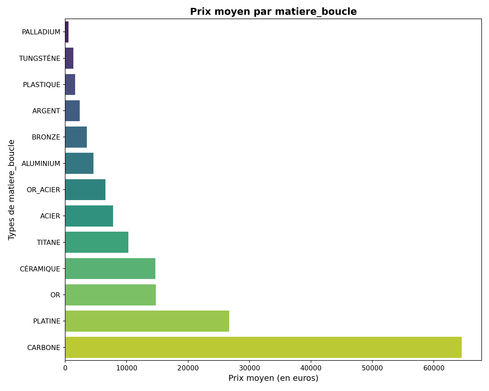
7.10 Répartition des prix selon le type de boucle :
Statistiques par Boucle
┏━━━━━━━━━━━━━━━━━┳━━━━━━━━━━━━┳━━━━━━━━━━┳━━━━━━━━━━┓
┃ Boucle ┃ Prix moyen ┃ Prix min ┃ Prix max ┃
┡━━━━━━━━━━━━━━━━━╇━━━━━━━━━━━━╇━━━━━━━━━━╇━━━━━━━━━━┩
│ DOUBLE_PLIS │ 14109.77 │ 65.00 │ 65.00 │
│ PLIS │ 11871.44 │ 80.00 │ 80.00 │
│ BOUCLE_ARDILLON │ 7419.38 │ 70.00 │ 70.00 │
│ FERMOIR_BIJOUX │ 7332.17 │ 240.00 │ 240.00 │
│ PAS_DE_BOUCLE │ 2692.00 │ 500.00 │ 500.00 │
│ BOUCLE ARDILLON │ 1407.00 │ 1407.00 │ 1407.00 │
└─────────────────┴────────────┴──────────┴──────────┘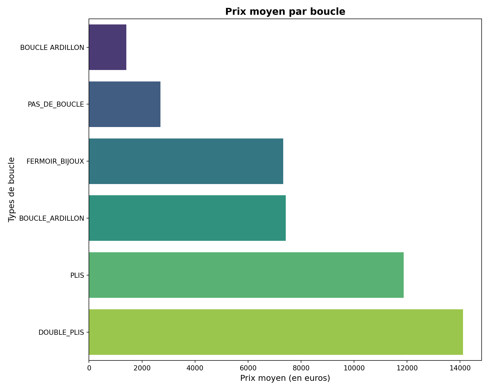
7.11 Répartition des prix selon le nombre de complications :
Statistiques par Comptage_fonctions
┏━━━━━━━━━━━━━━━━━━━━┳━━━━━━━━━━━━┳━━━━━━━━━━┳━━━━━━━━━━┓
┃ Comptage_fonctions ┃ Prix moyen ┃ Prix min ┃ Prix max ┃
┡━━━━━━━━━━━━━━━━━━━━╇━━━━━━━━━━━━╇━━━━━━━━━━╇━━━━━━━━━━┩
│ 6.0 │ 20433.62 │ 299.00 │ 299.00 │
│ 2.0 │ 12028.13 │ 80.00 │ 80.00 │
│ 4.0 │ 12026.30 │ 140.00 │ 140.00 │
│ 1.0 │ 11536.47 │ 70.00 │ 70.00 │
│ 5.0 │ 11188.42 │ 320.00 │ 320.00 │
│ 0.0 │ 10190.14 │ 49.00 │ 49.00 │
│ 3.0 │ 9629.03 │ 80.00 │ 80.00 │
│ 7.0 │ 6624.26 │ 250.00 │ 250.00 │
│ 8.0 │ 3979.67 │ 120.00 │ 120.00 │
│ 12.0 │ 1950.00 │ 1950.00 │ 1950.00 │
│ 9.0 │ 1750.00 │ 1750.00 │ 1750.00 │
│ 19.0 │ 1468.00 │ 1468.00 │ 1468.00 │
│ 10.0 │ 1190.00 │ 1100.00 │ 1100.00 │
└────────────────────┴────────────┴──────────┴──────────┘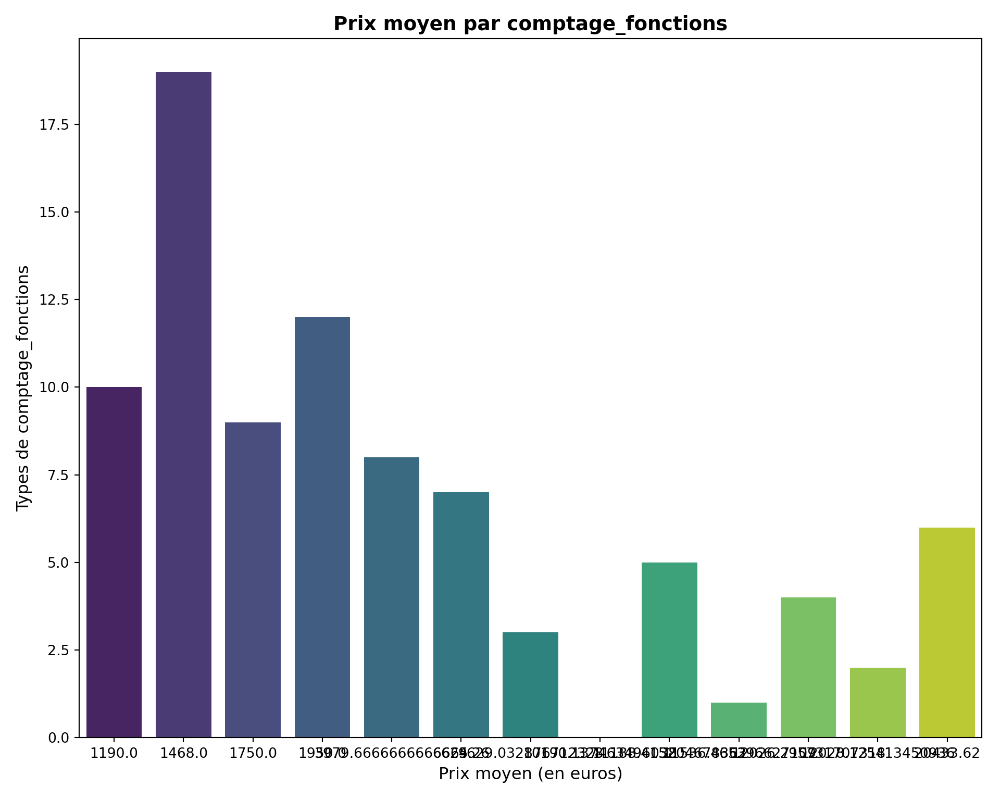
7.12 Répartition des prix selon le diamètre de la montre :
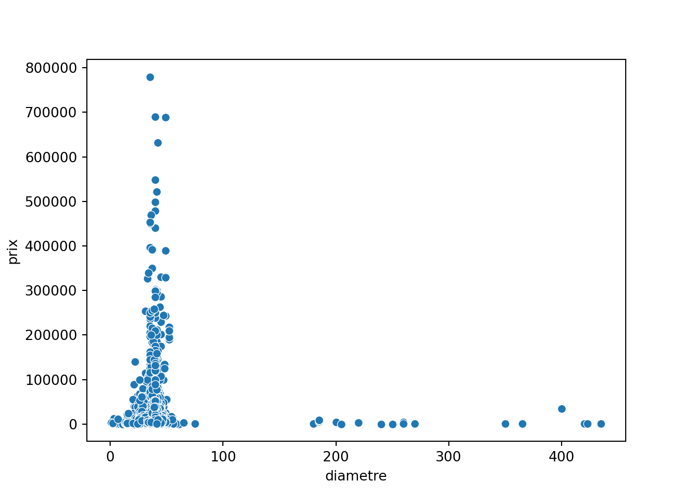
7.13 Répartition des prix selon le niveau d’étenchéité :
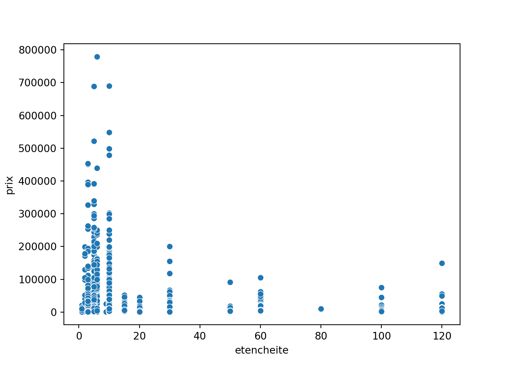